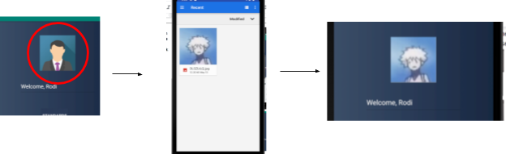
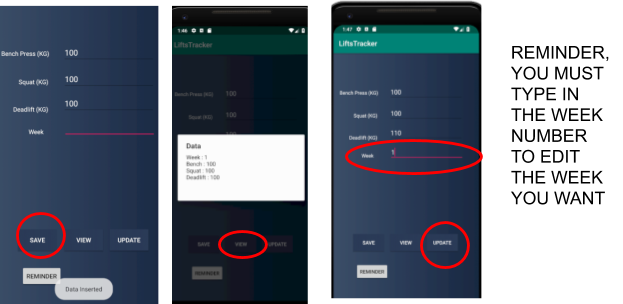

How to enter the app:
The first screen consists of a text box, in which you must type your name into. From there you have to click on go in order to access the next page
Navigation from the main page:
The main page consists of 4 buttons, the first 3, which are "standards", "records" and "progress" and User guide will redirect you to another page once clicked on.
Changing your avatar:
Once you are on the main screen, you have the option to change your avatar. To do this you must click on the avatar icon at the top of the screen. This will redirect you to your gallery, and will allow you to pick a picture in which will display on the main screen until you shut down the app.

Strength standards:
Once you click on the "Standards" button you are taken to a page with tables on it. These tables show you the strength standards of certain weight groups, in which you can then compare yourself with to see what category you come under.
Records and progress:
This page is where you can input your details to keep track of. each new entered entry is a weeks worth of training, and you can add new ones by entering your information, and then hitting the "save" button. To keep track of your progress, hit the "view" button. This will bring up a list of all of your entries to date.
if you accidentally enter the incorrect information, you can simply hit the "view" button, find out what week it was, use that information to fill in the week number, then once you enter the correct values you can press update. This will overwrite the week and put in your correct information.

Request permissions:
In order to actually add an avatar into the app, you must use the request permissions button. this is a button on the bottom right of the main screen labeled "REQUEST PERMISSION". This button will allow you to give permission to the app in order to use your storage
Setting reminders:
So you never forget to enter your weight lifting progression, there is a "reminder" button. This button will allow you to select a time of the day to in which will then set off a notification, reminding you that you must enter your new weight lifting information.
User guide button:
This is the button that has led you to this page, where it gives you a guide on how to use the application.